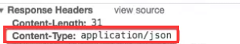
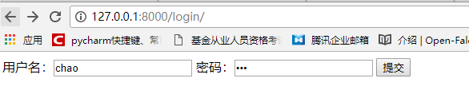
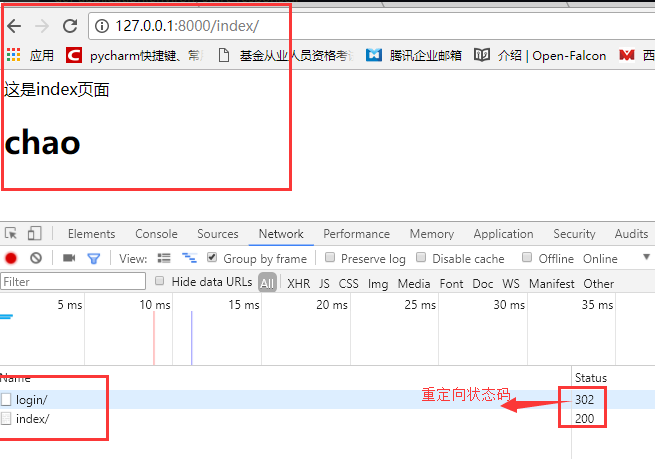

原文连接:https://www.cnblogs.com/fengqiang626/p/11585601.html
目录
1.Django的视图函数view
一个视图函数（类），简称视图，是一个简单的Python 函数（类），它接受Web请求并且返回Web响应。
响应可以是一张网页的HTML内容，一个重定向，一个404错误，一个XML文档，或者一张图片。
无论视图本身包含什么逻辑，都要返回响应。代码写在哪里也无所谓，只要它在你当前项目目录下面。除此之外没有更多的要求了——可以说“没有什么神奇的地方”。为了将代码放在某处，大家约定成俗将视图放置在项目（project）或应用程序（app）目录中的名为views.py的文件中。
1.1一个简单的视图
下面是一个以HTML文档的形式返回当前日期和时间的视图：
from django.http import HttpResponse
import datetime
def current_datetime(request):
now = datetime.datetime.now()
html = "<html><body>It is now %s.</body></html>" % now
return HttpResponse(html)让我们来逐行解释下上面的代码：
首先，我们从
django.http模块导入了HttpResponse类，以及Python的datetime库。接着，我们定义了
current_datetime函数。它就是视图函数。每个视图函数都使用HttpRequest对象作为第一个参数，并且通常称之为request。注意，视图函数的名称并不重要；不需要用一个统一的命名方式来命名，以便让Django识别它。我们将其命名为
current_datetime，是因为这个名称能够比较准确地反映出它实现的功能。这个视图会返回一个
HttpResponse对象，其中包含生成的响应。每个视图函数都负责返回一个HttpResponse对象。
Django使用请求和响应对象来通过系统传递状态。
当浏览器向服务端请求一个页面时，Django创建一个HttpRequest对象，该对象包含关于请求的元数据。然后，Django加载相应的视图，将这个HttpRequest对象作为第一个参数传递给视图函数。
每个视图负责返回一个HttpResponse对象。

视图层，熟练掌握两个对象即可：请求对象(request)和响应对象(HttpResponse)
2.CBV和FBV
FBV（function base views） 就是在视图里使用函数处理请求。
CBV（class base views） 就是在视图里使用类处理请求。
Python是一个面向对象的编程语言，如果只用函数来开发，有很多面向对象的优点就错失了（继承、封装、多态）。所以Django在后来加入了Class-Based-View。可以让我们用类写View。这样做的优点主要下面两种：
1.提高了代码的复用性，可以使用面向对象的技术，比如Mixin（多继承）
2.可以用不同的函数针对不同的HTTP方法处理，而不是通过很多if判断，提高代码可读性
写一个处理GET方法的view，用函数写的话是下面这样
from django.http import HttpResponse
def my_view(request):
if request.method == 'GET':
return HttpResponse('OK')用class-based view写的话
from django.http import HttpResponse
from django.views import View
class MyView(View):
def get(self, request):
return HttpResponse('OK') Django的url是将一个请求分配给可调用的函数的，而不是一个class。针对这个问题，class-based view提供了一个as_view()静态方法（也就是类方法），调用这个方法，会创建一个类的实例，然后通过实例调用dispatch()方法，dispatch()方法会根据request的method的不同调用相应的方法来处理request（如get(),post()等）。到这里，这些方法和function-based view差不多了，要接收request，得到一个response返回。如果方法没有定义，会抛出HttpResponseNotAllowed异常。
注意：使用CBV时，urls.py中也做对应的修改：：
# urls.py
from django.conf.urls import url
from myapp.views import MyView #引入我们在views.py里面创建的类
urlpatterns = [
url(r'^index/$', MyView.as_view()),
]CBV传参，和FBV类似，有名分组，无名分组
url写法：无名分组的
url(r'^cv/(\d{2})/', views.Myd.as_view(),name='cv'),
url(r'^cv/(?P<n>\d{2})/', views.Myd.as_view(name='xxx'),name='cv'),#如果想给类的name属性赋值，前提你的Myd类里面必须有name属性（类属性，定义init方法来接受属性行不通，但是可以自行研究一下，看看如何行通，意义不大），并且之前类里面的name属性的值会被覆盖掉类写法：
class Myd(View):
name = 'sb'
def get(self,request,n):
print('get方法执行了')
print('>>>',n)
return render(request,'cvpost.html',{'name':self.name})
def post(self,request,n):
print('post方法被执行了')
return HttpResponse('post')添加类的属性可以通过两种方法设置，第一种是常见的Python的方法，可以被子类覆盖
from django.http import HttpResponse
from django.views import View
class GreetingView(View):
name = "yuan"
def get(self, request):
return HttpResponse(self.name)
# You can override that in a subclass
class MorningGreetingView(GreetingView):
name= "alex"在url中设置类的属性Python
urlpatterns = [
url(r'^index/$', GreetingView.as_view(name="egon")), #类里面必须有name属性，并且会被传进来的这个属性值给覆盖掉
]3.使用Mixin（了解）
我觉得要理解django的class-based-view（以下简称cbv），首先要明白django引入cbv的目的是什么。在django1.3之前，generic view也就是所谓的通用视图，使用的是function-based-view（fbv），亦即基于函数的视图。有人认为fbv比cbv更pythonic，窃以为不然。python的一大重要的特性就是面向对象。而cbv更能体现python的面向对象。cbv是通过class的方式来实现视图方法的。class相对于function，更能利用多态的特定，因此更容易从宏观层面上将项目内的比较通用的功能抽象出来。关于多态，不多解释，有兴趣的同学自己Google。总之可以理解为一个东西具有多种形态（的特性）。cbv的实现原理通过看django的源码就很容易明白，大体就是由url路由到这个cbv之后，通过cbv内部的dispatch方法进行分发，将get请求分发给cbv.get方法处理，将post请求分发给cbv.post方法处理，其他方法类似。怎么利用多态呢？cbv里引入了mixin的概念。Mixin就是写好了的一些基础类，然后通过不同的Mixin组合成为最终想要的类。
所以，理解cbv的基础是，理解Mixin。Django中使用Mixin来重用代码，一个View Class可以继承多个Mixin，但是只能继承一个View（包括View的子类），推荐把View写在最右边，多个Mixin写在左边。
4.给视图加装饰器
4.1使用装饰器装饰FBV
FBV本身就是一个函数，所以和给普通的函数加装饰器无差：
def wrapper(func):
def inner(*args, **kwargs):
start_time = time.time()
ret = func(*args, **kwargs)
end_time = time.time()
print("used:", end_time-start_time)
return ret
return inner
# FBV版添加班级
@wrapper
def add_class(request):
if request.method == "POST":
class_name = request.POST.get("class_name")
models.Classes.objects.create(name=class_name)
return redirect("/class_list/")
return render(request, "add_class.html")4.2使用装饰器装饰CBV
类中的方法与独立函数不完全相同，因此不能直接将函数装饰器应用于类中的方法 ，我们需要先将其转换为方法装饰器。
Django中提供了method_decorator装饰器用于将函数装饰器转换为方法装饰器。
from django.views import View
from django.utils.decorators import method_decorator
class AddClass(View):
@method_decorator(wrapper)
def get(self, request):
return render(request, "add_class.html")
def post(self, request):
class_name = request.POST.get("class_name")
models.Classes.objects.create(name=class_name)
return redirect("/class_list/")下面是扩展内容，大家看看就可以了：
# 使用CBV时要注意，请求过来后会先执行dispatch()这个方法，如果需要批量对具体的请求处理方法，如get，post等做一些操作的时候，这里我们可以手动改写dispatch方法，这个dispatch方法就和在FBV上加装饰器的效果一样。
class Login(View):
def dispatch(self, request, *args, **kwargs):
print('before')
obj = super(Login,self).dispatch(request, *args, **kwargs)
print('after')
return obj
def get(self,request):
return render(request,'login.html')
def post(self,request):
print(request.POST.get('user'))
return HttpResponse('Login.post')另外给cbv添加装饰器的时候（先作为了解）：
直接添加在dispatch里面，这样每个函数都会执行
from django.utils.decorators import method_decorator
@method_decorator(login_test)
def dispatch(self, request, *args, **kwargs):
res = super(IndexView, self).dispatch(request, *args, **kwargs)
return res添加在每一个函数中
from django.utils.decorators import method_decorator
@method_decorator(login_test)
def get(self, request, *args, **kwargs):
return render(request, 'index.html')直接添加在类上，后面的name表示只给get添加装饰器
from django.utils.decorators import method_decorator
@method_decorator(login_test, name='get') get是给get方法加 （以这种方式如果想给多个方法加装饰器，需要写多层装饰器，因为name这个参数的值必须是个字符串，并且不能同时写两个方法）
@method_decorator(login_test, name='post') post是给post方法加
class IndexView(View):
def get(self,request)：
pass
views.py里面的内容：
from django.shortcuts import render,redirect,HttpResponse
from django.urls import reverse
from django.utils.decorators import method_decorator
from django.views import View
def wrapper(fn):
def inner(request,*args,**kwargs):
print('xxxxx')
ret = fn(request)
print('xsssss')
return ret
return inner
# @method_decorator(wrapper,name='get')#CBV版装饰器方式一
class BookList(View):
@method_decorator(wrapper) #CBV版装饰器方式二
def dispatch(self, request, *args, **kwargs):
print('请求内容处理开始')
res = super().dispatch(request, *args, **kwargs)
print('处理结束')
return res
def get(self,request):
print('get内容')
# all_books = models.Book.objects.all()
return render(request,'login.html')
@method_decorator(wrapper) #CBV版装饰器方式三
def post(self,request):
print('post内容')
return redirect(reverse('book_list'))
# @wrapper
def book_list(request):
return HttpResponse('aaa')url.py:
url(r'^book_list/', views.book_list,name='book_list'),
url(r'^booklist/', views.BookList.as_view(),name='booklist'), login.html:
<!DOCTYPE html>
<html lang="en">
<head>
<meta charset="UTF-8">
<title>Title</title>
</head>
<body>
<form action="/booklist/" method="post">
{% csrf_token %}
用户名：<input type="text" name="username">
<input type="submit">
</form>
</body>
</html> - 添加装饰器前必须导入from django.utils.decorators import method_decorator
- 添加装饰器的格式必须为@method_decorator()，括号里面为装饰器的函数名
- 给类添加是必须声明name
- 注意csrf-token装饰器的特殊性，在CBV模式下它只能加在dispatch上面(后面再说)
下面这是csrf_token的装饰器：
@csrf_protect，为当前函数强制设置防跨站请求伪造功能，即便settings中没有设置csrfToken全局中间件。
@csrf_exempt，取消当前函数防跨站请求伪造功能，即便settings中设置了全局中间件。
注意：from django.views.decorators.csrf import csrf_exempt,csrf_protect
5.request对象
当一个页面被请求时，Django就会创建一个包含本次请求原信息（请求报文中的请求行、首部信息、内容主体等）的HttpRequest对象。
Django会将这个对象自动传递给响应的视图函数，一般视图函数约定俗成地使用 request 参数承接这个对象。
当一个页面被请求时，Django就会创建一个包含本次请求原信息的HttpRequest对象。
Django会将这个对象自动传递给响应的视图函数，一般视图函数约定俗成地使用 request 参数承接这个对象。
5.1请求相关的常用值
path_info 返回用户访问url，不包括域名
method 请求中使用的HTTP方法的字符串表示，全大写表示。
GET 包含所有HTTP GET参数的类字典对象
POST 包含所有HTTP POST参数的类字典对象
body 请求体，byte类型 request.POST的数据就是从body里面提取到的
5.2属性
所有的属性应该被认为是只读的，除非另有说明
属性：
django将请求报文中的请求行、头部信息、内容主体封装成 HttpRequest 类中的属性。
除了特殊说明的之外，其他均为只读的。
0.HttpRequest.scheme（后面再学）
表示请求方案的字符串（通常为http或https）
1.HttpRequest.body(后面再学)
一个字符串，代表请求报文的主体。在处理非 HTTP 形式的报文时非常有用，例如：二进制图片、XML,Json等。
但是，如果要处理表单数据的时候，推荐还是使用 HttpRequest.POST 。
另外，我们还可以用 python 的类文件方法去操作它，详情参考 HttpRequest.read() 。
2.HttpRequest.path
一个字符串，表示请求的路径组件（不含域名）。
例如："/music/bands/the_beatles/"
3.HttpRequest.method
一个字符串，表示请求使用的HTTP 方法。必须使用大写。
例如："GET"、"POST"
4.HttpRequest.encoding
一个字符串，表示提交的数据的编码方式（如果为 None 则表示使用 DEFAULT_CHARSET 的设置，默认为 'utf-8'）。
这个属性是可写的，你可以修改它来修改访问表单数据使用的编码。
接下来对属性的任何访问（例如从 GET 或 POST 中读取数据）将使用新的 encoding 值。
如果你知道表单数据的编码不是 DEFAULT_CHARSET ，则使用它。
5.HttpRequest.GET
一个类似于字典的对象，包含 HTTP GET 的所有参数。详情请参考 QueryDict 对象。
6.HttpRequest.POST
一个类似于字典的对象，如果请求中包含表单数据，则将这些数据封装成 QueryDict 对象。
POST 请求可以带有空的 POST 字典 —— 如果通过 HTTP POST 方法发送一个表单，但是表单中没有任何的数据，QueryDict 对象依然会被创建。
因此，不应该使用 if request.POST 来检查使用的是否是POST 方法；应该使用 if request.method == "POST"
另外：如果使用 POST 上传文件的话，文件信息将包含在 FILES 属性中。
7.HttpRequest.COOKIES
一个标准的Python 字典，包含所有的cookie。键和值都为字符串。
8.HttpRequest.FILES
一个类似于字典的对象，包含所有的上传文件信息。
FILES 中的每个键为<input type="file" name="" /> 中的name，值则为对应的数据。
注意，FILES 只有在请求的方法为POST 且提交的<form> 带有enctype="multipart/form-data" 的情况下才会
包含数据。否则，FILES 将为一个空的类似于字典的对象。
9.HttpRequest.META
一个标准的Python 字典，包含所有的HTTP 首部（请求头信息）。具体的头部信息取决于客户端和服务器，下面是一些示例：
CONTENT_LENGTH —— 请求的正文的长度（是一个字符串）。
CONTENT_TYPE —— 请求的正文的MIME 类型。
HTTP_ACCEPT —— 响应可接收的Content-Type。
HTTP_ACCEPT_ENCODING —— 响应可接收的编码。
HTTP_ACCEPT_LANGUAGE —— 响应可接收的语言。
HTTP_HOST —— 客服端发送的HTTP Host 头部。
HTTP_REFERER —— Referring 页面。
HTTP_USER_AGENT —— 客户端的user-agent 字符串。
QUERY_STRING —— 单个字符串形式的查询字符串（未解析过的形式）。
REMOTE_ADDR —— 客户端的IP 地址。
REMOTE_HOST —— 客户端的主机名。
REMOTE_USER —— 服务器认证后的用户。
REQUEST_METHOD —— 一个字符串，例如"GET" 或"POST"。
SERVER_NAME —— 服务器的主机名。
SERVER_PORT —— 服务器的端口（是一个字符串）。
从上面可以看到，除 CONTENT_LENGTH 和 CONTENT_TYPE 之外，请求中的任何 HTTP 首部转换为 META 的键时，
都会将所有字母大写并将连接符替换为下划线最后加上 HTTP_ 前缀。
所以，一个叫做 X-Bender 的头部将转换成 META 中的 HTTP_X_BENDER 键。
10.HttpRequest.user
一个 AUTH_USER_MODEL 类型的对象，表示当前登录的用户。
如果用户当前没有登录，user 将设置为 django.contrib.auth.models.AnonymousUser 的一个实例。你可以通过 is_authenticated() 区分它们。
例如：
if request.user.is_authenticated():
# Do something for logged-in users.
else:
# Do something for anonymous users.
user 只有当Django 启用 AuthenticationMiddleware 中间件时才可用。
-------------------------------------------------------------------------------------
匿名用户
class models.AnonymousUser
django.contrib.auth.models.AnonymousUser 类实现了django.contrib.auth.models.User 接口，但具有下面几个不同点：
id 永远为None。
username 永远为空字符串。
get_username() 永远返回空字符串。
is_staff 和 is_superuser 永远为False。
is_active 永远为 False。
groups 和 user_permissions 永远为空。
is_anonymous() 返回True 而不是False。
is_authenticated() 返回False 而不是True。
set_password()、check_password()、save() 和delete() 引发 NotImplementedError。
New in Django 1.8:
新增 AnonymousUser.get_username() 以更好地模拟 django.contrib.auth.models.User。
11.HttpRequest.session
一个既可读又可写的类似于字典的对象，表示当前的会话。只有当Django 启用会话的支持时才可用。
完整的细节参见会话的文档。上传文件示例
def upload(request):
"""
保存上传文件前，数据需要存放在某个位置。默认当上传文件小于2.5M时，django会将上传文件的全部内容读进内存。从内存读取一次，写磁盘一次。
但当上传文件很大时，django会把上传文件写到临时文件中，然后存放到系统临时文件夹中。
:param request:
:return:
"""
if request.method == "POST":
# 从请求的FILES中获取上传文件的文件名，file为页面上type=files类型input的name属性值
filename = request.FILES["file"].name
# 在项目目录下新建一个文件
with open(filename, "wb") as f:
# 从上传的文件对象中一点一点读
for chunk in request.FILES["file"].chunks():
# 写入本地文件
f.write(chunk)
return HttpResponse("上传OK")方法
1.HttpRequest.get_host()
根据从HTTP_X_FORWARDED_HOST（如果打开 USE_X_FORWARDED_HOST，默认为False）和 HTTP_HOST 头部信息返回请求的原始主机。
如果这两个头部没有提供相应的值，则使用SERVER_NAME 和SERVER_PORT，在PEP 3333 中有详细描述。
USE_X_FORWARDED_HOST：一个布尔值，用于指定是否优先使用 X-Forwarded-Host 首部，仅在代理设置了该首部的情况下，才可以被使用。
例如："127.0.0.1:8000"
注意：当主机位于多个代理后面时，get_host() 方法将会失败。除非使用中间件重写代理的首部。
2.HttpRequest.get_full_path()
返回 path，如果可以将加上查询字符串。
例如："/music/bands/the_beatles/?print=true"
3.HttpRequest.get_signed_cookie(key, default=RAISE_ERROR, salt='', max_age=None)
返回签名过的Cookie 对应的值，如果签名不再合法则返回django.core.signing.BadSignature。
如果提供 default 参数，将不会引发异常并返回 default 的值。
可选参数salt 可以用来对安全密钥强力攻击提供额外的保护。max_age 参数用于检查Cookie 对应的时间戳以确保Cookie 的时间不会超过max_age 秒。
复制代码
>>> request.get_signed_cookie('name')
'Tony'
>>> request.get_signed_cookie('name', salt='name-salt')
'Tony' # 假设在设置cookie的时候使用的是相同的salt
>>> request.get_signed_cookie('non-existing-cookie')
...
KeyError: 'non-existing-cookie' # 没有相应的键时触发异常
>>> request.get_signed_cookie('non-existing-cookie', False)
False
>>> request.get_signed_cookie('cookie-that-was-tampered-with')
...
BadSignature: ...
>>> request.get_signed_cookie('name', max_age=60)
...
SignatureExpired: Signature age 1677.3839159 > 60 seconds
>>> request.get_signed_cookie('name', False, max_age=60)
False
复制代码
4.HttpRequest.is_secure()
如果请求时是安全的，则返回True；即请求通是过 HTTPS 发起的。
5.HttpRequest.is_ajax()
如果请求是通过XMLHttpRequest 发起的，则返回True，方法是检查 HTTP_X_REQUESTED_WITH 相应的首部是否是字符串'XMLHttpRequest'。
大部分现代的 JavaScript 库都会发送这个头部。如果你编写自己的 XMLHttpRequest 调用（在浏览器端），你必须手工设置这个值来让 is_ajax() 可以工作。
如果一个响应需要根据请求是否是通过AJAX 发起的，并且你正在使用某种形式的缓存例如Django 的 cache middleware，
你应该使用 vary_on_headers('HTTP_X_REQUESTED_WITH') 装饰你的视图以让响应能够正确地缓存。按照下面的方式打印一下看看：
from django.shortcuts import render,HttpResponse,redirect
# Create your views here.
def index(request):
print(request.method) #请求方式
print(request.path) #请求路径，不带参数的
print(request.POST) #post请求数据 字典格式
print(request.GET) #get的请求数据 字典格式
print(request.META) #请求头信息,将来用到哪个咱们再说哪个
print(request.get_full_path()) #获取请求路径带参数的，/index/?a=1
print(request.is_ajax()) #判断是不是ajax发送的请求，True和False
'''
Django一定最后会响应一个HttpResponse的示例对象
三种形式：
1 HttpResponse('字符串') 最简单
2 render(页面) 最重要
2.1 两个功能
-- 读取文件字符串
-- 嵌入变量(模板渲染) html里面：{{ name }} ， {'name':'chao'}作为render的第三个参数，想写多个变量{'name':'chao','hobby':['篮球','羽毛球']....}
3 redirect() 重定向 最难理解,某个网站搬家了，网址变了，访问原来的网址就重定向到一个新网址，就叫做重定向，网站自己做的重定向，你访问还是访问的你之前的，你自己啥也不用做，浏览器发送请求，然后服务端响应，然后服务端告诉浏览器，你直接跳转到另外一个网址上，那么浏览器又自动发送了另外一个请求，发送到服务端，服务端返回一个页面，包含两次请求，登陆成功后跳转到网站的首页，网站首页的网址和你login登陆页面的网址是不用的。
'''
return render(request,'index.html',{'name':'chao'})
# return HttpResponse('ok')注意：键值对的值是多个的时候,比如checkbox类型的input标签，select标签，需要用：
request.POST.getlist("hobby")6.response对象
与由Django自动创建的HttpRequest对象相比，HttpResponse对象是我们的职责范围了。我们写的每个视图都需要实例化，填充和返回一个HttpResponse。
HttpResponse类位于django.http模块中。
6.1使用
传递字符串
from django.http import HttpResponse
response = HttpResponse("Here's the text of the Web page.")
response = HttpResponse("Text only, please.", content_type="text/plain")设置或删除响应头信息
response = HttpResponse()
response['Content-Type'] = 'text/html; charset=UTF-8'
del response['Content-Type']属性
HttpResponse.content：响应内容
HttpResponse.charset：响应内容的编码
HttpResponse.status_code：响应的状态码
6.2JsonResponse对象
JsonResponse是HttpResponse的子类，专门用来生成JSON编码的响应。
from django.http import JsonResponse
response = JsonResponse({'foo': 'bar'})
print(response.content)
b'{"foo": "bar"}' class JsonResponse(data, encoder=DjangoJSONEncoder, safe=True, json_dumps_params=None,**kwargs)
这个类是HttpRespon的子类，它主要和父类的区别在于：
1.它的默认Content-Type 被设置为： application/json
2.第一个参数，data应该是一个字典类型，当 safe 这个参数被设置为：False ,那data可以填入任何能被转换为JSON格式的对象，比如list, tuple, set。 默认的safe 参数是 True. 如果你传入的data数据类型不是字典类型，那么它就会抛出 TypeError的异常。
3.json_dumps_params参数是一个字典,它将调用json.dumps()方法并将字典中的参数传入给该方法。
#如果这样返回，ajax还需要进行json解析
#views.py
return HttpResponse(json.dumps({"msg":"ok!"}))
#index.html
var data=json.parse(data)
console.log(data.msg); 使用HttpResponse对象来响应数据的时候，还可以通过content_type指定格式：
return HttpResponse(json.dumps(data),content_type="application/json") 前端调试窗口就可以看到这个类型

如果不写这个参数是这个类型：长得像json格式的字符串，当然也可以转换成json的

看下面这种，JsonResponse默认就是content_type="application/json"。
#如果这样返回，两边都不需要进行json的序列化与反序列化，ajax接受的直接是一个对象
#views.py
from django.http import JsonResponse
return JsonResponse({"msg":"ok!"})
#index.html
console.log(data.msg); 默认只能传递字典类型，如果要传递非字典类型需要设置一下safe关键字参数。
response = JsonResponse([1, 2, 3], safe=False)响应对象主要有三种形式：
- HttpResponse()
- render()
- redirect()
HttpResponse()括号内直接跟一个具体的字符串作为响应体，比较直接很简单，所以这里主要介绍后面两种形式。
6.3render()

结合一个给定的模板和一个给定的上下文字典，并返回一个渲染后的 HttpResponse 对象。
参数：
request： 用于生成响应的请求对象。
template_name：要使用的模板的完整名称，可选的参数
context：添加到模板上下文的一个字典。默认是一个空字典。如果字典中的某个值是可调用的，视图将在渲染模板之前调用它。
content_type：生成的文档要使用的MIME类型。默认为 DEFAULT_CONTENT_TYPE 设置的值。默认为'text/html'
status：响应的状态码。默认为200。 useing: 用于加载模板的模板引擎的名称。 一个简单的例子：
from django.shortcuts import render
def my_view(request):
# 视图的代码写在这里
return render(request, 'myapp/index.html', {'foo': 'bar'})上面的代码等于（了解）：from django.http import HttpResponse
from django.template import loader
def my_view(request):
# 视图代码写在这里
t = loader.get_template('myapp/index.html')
c = {'foo': 'bar'}
return HttpResponse(t.render(c, request))6.4redirect() ：给浏览器了一个30x的状态码
参数可以是：
1. 一个模型：将调用模型的get_absolute_url() 函数
2.一个视图，可以带有参数：将使用urlresolvers.reverse 来反向解析名称
3.一个绝对的或相对的URL，将原封不动的作为重定向的位置。
默认返回一个临时的重定向；传递permanent=True 可以返回一个永久的重定向。
你可以用多种方式使用redirect() 函数。
传递一个具体的ORM对象（了解即可）
将调用具体ORM对象的get_absolute_url() 方法来获取重定向的URL：
from django.shortcuts import redirect
def my_view(request):
...
object = MyModel.objects.get(...)
return redirect(object)传递一个视图的名称
def my_view(request):
...
return redirect('some-view-name', foo='bar')传递要重定向到的一个具体的网址
def my_view(request):
...
return redirect('/some/url/')看一个例子
index.html文件
<!DOCTYPE html>
<html lang="en">
<head>
<meta charset="UTF-8">
<title>Title</title>
</head>
<body>
<div>这是index页面</div>
<h1>{{ name }}</h1>
</body>
</html>login.html文件
<!DOCTYPE html>
<html lang="en">
<head>
<meta charset="UTF-8">
<title>Title</title>
</head>
<body>
<div>
<form action="{% url 'xxx' %}" method="post">
用户名：<input type="text" name="username">
密码：<input type="password" name="password">
<input type="submit">
</form>
</div>
</body>
</html>urls.py里面的内容
from django.conf.urls import url
from django.contrib import admin
from app01 import views
urlpatterns = [
# url(r'^admin/', admin.site.urls),
url(r'^index/', views.index),
url(r'^login/', views.login,name='xxx'),
][](javascript:void(0);views.py视图函数里面的内容
from django.shortcuts import render,HttpResponse,redirect
# Create your views here.
def index(request):
return render(request,'index.html',{'name':'chao'})
def login(request):
method = request.method
if method == 'GET':
return render(request,'login.html')
else:
username = request.POST.get('username')
password = request.POST.get('password')
if username == 'chao' and password == '123':
return redirect('/index/') #重定向到/index/路径，这也是发送了一个请求，别忘了在上面引入这个redirect类，和render、Httpresponse在一个地方引入
# return HttpResponse('success')
else:
return HttpResponse('失败') 上面几个文件搞好之后，我们重启Django项目，然后登陆页面的输入网址，注意，你输入的网址端口要和你启动的django项目的端口一样。

一点击提交按钮，你看一下network里面发送了几个请求：两个请求，一个是login请求，一个index请求。


如果没有做重定向，那么你登陆完之后，还需要自己去输入首页的地址去访问网站首页，你说对不对。
但是如果我们在函数里面写的render来返回内容，两者有什么不同呢？
from django.shortcuts import render,HttpResponse,redirect
# Create your views here.
def index(request):
return render(request,'index.html',{'name':'chao'})
def login(request):
method = request.method
if method == 'GET':
return render(request,'login.html')
else:
username = request.POST.get('username')
password = request.POST.get('password')
if username == 'chao' and password == '123':
return redirect('/index/') #重定向到/index/路径，这也是发送了一个请求，别忘了在上面引入这个redirect类，和render、Httpresponse在一个地方引入
# return render(request,'index.html')#如果直接用render来返回页面，是一次响应就返回了页面，两者是有区别的，并且如果你用render返回index.html页面，那么这个页面里面的模板渲染语言里面需要的数据你怎么搞，如果这些数据就是人家index那个函数里面独有的呢，你怎么搞，有人可能就响了，我把所有的数据都拿过来不就行了吗，首先如果数据量很大的话，是不是都重复了，并且你想想如果用户登陆完成之后，你们有进行跳转，那么如果网速不太好，卡一下，你想刷新一下你的页面，你是不是相当于又发送了一个login请求，你刷新完之后，是不是还要让你输入用户名和密码，你想想是不是，所有咱们一般在登陆之后都做跳转。
# 并且大家注意一个问题昂：redirect('/login/')如果你重定向到你当前这个函数对应的路径下，你想想是什么想过，一直重定向自己的这个网址，浏览器会报错，当然这个注册登陆页面不会出现这个报错的情况，因为需要你用户点击提交才发送请求。你可以试试那个index函数，里面返回一个redirect('/index/')
#redirect本质上也是一个HttpResponse的操作，看看源码就知道了
# return HttpResponse('success')
else:
return HttpResponse('失败')当然也可以是一个完整的网址
def my_view(request):
...
return redirect('http://example.com/') 默认情况下，redirect() 返回一个临时重定向。以上所有的形式都接收一个permanent 参数；如果设置为True，将返回一个永久的重定向：
def my_view(request):
...
object = MyModel.objects.get(...) #学了orm之后再看吧
return redirect(object, permanent=True) 扩展阅读：
key两次请求，关于301和302：
1）301和302的区别。
301和302状态码都表示重定向，就是说浏览器在拿到服务器返回的这个状态码后会自动跳转到一个新的URL地址，这个地址可以从响应的Location首部中获取
（用户看到的效果就是他输入的地址A瞬间变成了另一个地址B）——这是它们的共同点。
他们的不同在于。301表示旧地址A的资源已经被永久地移除了（这个资源不可访问了），搜索引擎在抓取新内容的同时也将旧的网址交换为重定向之后的网址；
302表示旧地址A的资源还在（仍然可以访问），这个重定向只是临时地从旧地址A跳转到地址B，搜索引擎会抓取新的内容而保存旧的网址。 SEO302好于301
2）重定向原因：
（1）网站调整（如改变网页目录结构）；
（2）网页被移到一个新地址；
（3）网页扩展名改变(如应用需要把.php改成.Html或.shtml)。
这种情况下，如果不做重定向，则用户收藏夹或搜索引擎数据库中旧地址只能让访问客户得到一个404页面错误信息，访问流量白白丧失；再者某些注册了多个域名的
网站，也需要通过重定向让访问这些域名的用户自动跳转到主站点等。 临时重定向（响应状态码：302）和永久重定向（响应状态码：301）对普通用户来说是没什么区别的，它主要面向的是搜索引擎的机器人。
A页面临时重定向到B页面，那搜索引擎收录的就是A页面。
A页面永久重定向到B页面，那搜索引擎收录的就是B页面。
用redirect可以解释APPEND_SLASH的用法！这个不讲~~